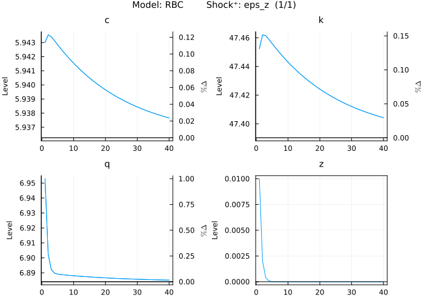
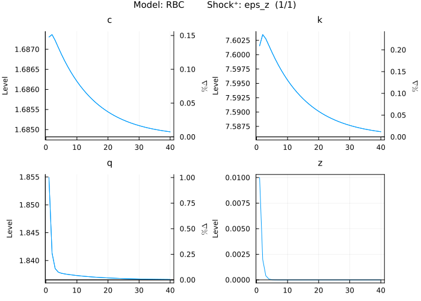
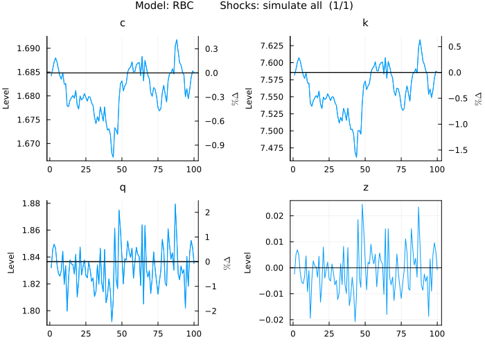
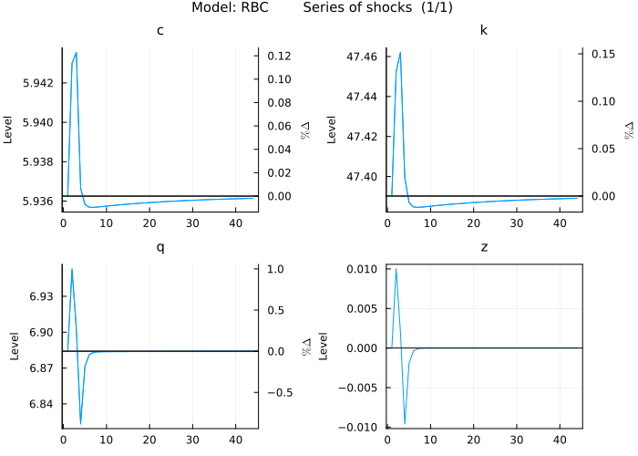
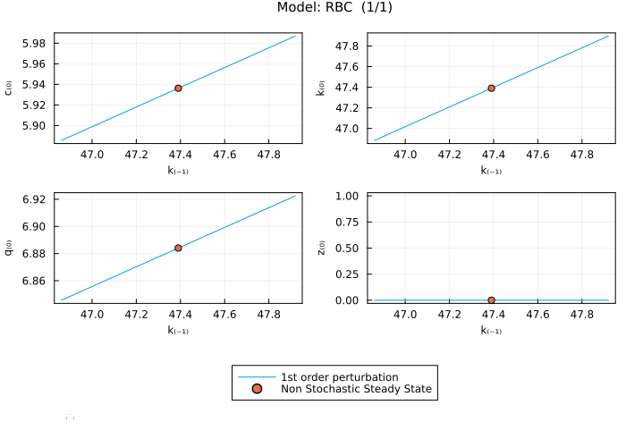
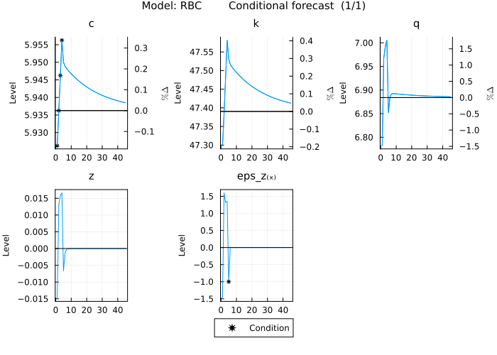

Write your first model - simple RBC
The following tutorial will walk you through the steps of writing down a model and analysing it. Prior knowledge of DSGE models and their solution in practical terms (e.g. having used a mod file with dynare) is useful in understanding this tutorial. For the purpose of this tutorial we will work with a simplified version of a real business cycle (RBC) model. The model laid out below examines capital accumulation, consumption, and random technological progress. Households maximize lifetime utility from consumption, weighing current against future consumption. Firms produce using capital and a stochastic technology factor, setting capital rental rates based on marginal productivity. The model integrates households' decisions, firms' production, and random technological shifts to understand economic growth and dynamics.
RBC - derivation of model equations
Household's Problem: Households derive utility from consuming goods and discount future consumption. The decision they face every period is how much of their income to consume now versus how much to invest for future consumption.
\[E_0 \sum_{t=0}^{\infty} \beta^t \ln(c_t)\]
Their budget constraint reflects that their available resources for consumption or investment come from returns on their owned capital (both from the rental rate and from undepreciated capital) and any profits distributed from firms.
\[c_t + k_t = (1-\delta) k_{t-1} + R_t k_{t-1} + \Pi_t\]
Combining the first order (optimality) conditions with respect to $c_t$ and $k_t$ shows that households balance the marginal utility of consuming one more unit today against the expected discounted marginal utility of consuming that unit in the future.
\[\frac{1}{c_t} = \beta E_t \left[ (R_{t+1} + 1 - \delta) \frac{1}{c_{t+1}} \right]\]
Firm's Problem: Firms rent capital from households to produce goods. Their profits, $\Pi_t$, are the difference between their revenue from selling goods and their costs from renting capital. Competition ensures that profits are 0.
\[\Pi_t = q_t - R_t k_{t-1}\]
Given the Cobb-Douglas production function with a stochastic technology process:
\[q_t = e^{z_t} k_{t-1}^{\alpha}\]
The FOC with respect to capital $k_{t}$ determines the optimal amount of capital the firm should rent. It equates the marginal product of capital (how much additional output one more unit of capital would produce) to its cost (the rental rate).
\[R_t = \alpha e^{z_t} k_{t-1}^{\alpha-1}\]
Market Clearing: This condition ensures that every good produced in the economy is either consumed by households or invested to augment future production capabilities.
\[q_t = c_t + i_t\]
With:
\[i_t = k_t - (1-\delta)k_{t-1}\]
Equations describing the dynamics of the economy:
- Household's Optimization (Euler Equation): Signifies the balance households strike between current and future consumption. The rental rate of capital has been substituted for.
\[\frac{1}{c_t} = \frac{\beta}{c_{t+1}} \left( \alpha e^{z_{t+1}} k_t^{\alpha-1} + (1 - \delta) \right)\]
- Capital Accumulation: Charts the progression of capital stock over time.
\[c_t + k_t = (1-\delta)k_{t-1} + q_t\]
- Production: Describes the output generation from the previous period's capital stock, enhanced by current technology.
\[q_t = e^{z_t} k_{t-1}^{\alpha}\]
- Technology Process: Traces the evolution of technological progress. Exogenous innovations are captured by $\epsilon^z_{t}$.
\[z_{t} = \rho^z z_{t-1} + \sigma^z \epsilon^z_{t}\]
Define the model
The first step is always to name the model and write down the equations. Taking the RBC model described above this would go as follows.
First, we load the package and then use the @model macro to define our model. The first argument after @model is the model name and will be the name of the object in the global environment containing all information regarding the model. The second argument to the macro are the equations, which we write down between begin and end. One equation per line and timing of endogenous variables are expressed in the square brackets following the variable name. Exogenous variables (shocks) are followed by a keyword in square brackets indicating them being exogenous (in this case [x]). Note that names can leverage julias unicode capabilities (alpha can be written as α).
julia> using MacroModellingjulia> @model RBC begin 1 / c[0] = (β / c[1]) * (α * exp(z[1]) * k[0]^(α - 1) + (1 - δ)) c[0] + k[0] = (1 - δ) * k[-1] + q[0] q[0] = exp(z[0]) * k[-1]^α z[0] = ρᶻ * z[-1] + σᶻ * ϵᶻ[x] endModel: RBC Variables Total: 4 Auxiliary: 0 States: 2 Auxiliary: 0 Jumpers: 2 Auxiliary: 0 Shocks: 1 Parameters: 5
After the model is parsed we get some info on the model variables, and parameters.
Define the parameters
Next we need to add the parameters of the model. The macro @parameters takes care of this:
julia> @parameters RBC begin σᶻ= 0.01 ρᶻ= 0.2 δ = 0.02 α = 0.5 β = 0.95 endRemove redundant variables in non stochastic steady state problem: 0.511 seconds Set up non stochastic steady state problem: 2.904 seconds Take symbolic derivatives up to first order: 3.049 seconds Find non stochastic steady state: 0.0 seconds Model: RBC Variables Total: 4 Auxiliary: 0 States: 2 Auxiliary: 0 Jumpers: 2 Auxiliary: 0 Shocks: 1 Parameters: 5
Parameter definitions are similar to assigning values in julia. Note that we have to write one parameter definition per line.
Given the equations and parameters, the package will first attempt to solve the system of nonlinear equations symbolically (including possible calibration equations - see next tutorial for an example). If an analytical solution is not possible, numerical solution methods are used to try and solve it. There is no guarantee that a solution can be found, but it is highly likely, given that a solution exists. The problem setup tries to incorporate parts of the structure of the problem, e.g. bounds on variables: if one equation contains log(k) it must be that k > 0. Nonetheless, the user can also provide useful information such as variable bounds or initial guesses. Bounds can be set by adding another expression to the parameter block e.g.: c > 0. Large values are typically a problem for numerical solvers. Therefore, providing a guess for these values will increase the speed of the solver. Guesses can be provided as a Dict after the model name and before the parameter definitions block, e.g.: @parameters RBC guess = Dict(k => 10) begin ... end.
Plot impulse response functions (IRFs)
A useful output to analyze are IRFs for the exogenous shocks. Calling plot_irf (different names for the same function are also supported: plot_irfs, or plot_IRF) will take care of this. Please note that you need to import the StatsPlots packages once before the first plot. In the background the package solves (symbolically in this simple case) for the non stochastic steady state (SS) and calculates the first order perturbation solution.
julia> import StatsPlotsjulia> plot_irf(RBC)1-element Vector{Any}: Plot{Plots.GRBackend() n=14}

When the model is solved the first time (in this case by calling plot_irf), the package breaks down the steady state problem into independent blocks and first attempts to solve them symbolically and if that fails numerically.
The plot shows the responses of the endogenous variables (c, k, q, and z) to a one standard deviation positive (indicated by Shock⁺ in chart title) unanticipated shock in eps_z. Therefore there are as many subplots as there are combinations of shocks and endogenous variables (which are impacted by the shock). Plots are composed of up to 9 subplots and the plot title shows the model name followed by the name of the shock and which plot we are seeing out of the plots for this shock (e.g. (1/3) means we see the first out of three plots for this shock). Subplots show the sorted endogenous variables with the left y-axis showing the level of the respective variable and the right y-axis showing the percent deviation from the SS (if variable is strictly positive). The horizontal black line marks the SS.
Explore other parameter values
Playing around with the model can be especially insightful in the early phase of model development. The package tries to facilitates this process to the extent possible. Typically one wants to try different parameter values and see how the IRFs change. This can be done by using the parameters argument of the plot_irf function. We pass a Pair with the Symbol of the parameter (: in front of the parameter name) we want to change and its new value to the parameter argument (e.g. :α => 0.3).
julia> plot_irf(RBC, parameters = :α => 0.3)1-element Vector{Any}: Plot{Plots.GRBackend() n=14}

First, the package finds the new steady state, solves the model dynamics around it and saves the new parameters and solution in the model object. Second, note that the shape of the curves in the plot and the y-axis values changed. Updating the plot for new parameters is significantly faster than calling it the first time. This is because the first call triggers compilations of the model functions, and once compiled the user benefits from the performance of the specialised compiled code.
Plot model simulation
Another insightful output is simulations of the model. Here we can use the plot_simulations function. Please note that you need to import the StatsPlots packages once before the first plot. To the same effect we can use the plot_irf function and specify in the shocks argument that we want to :simulate the model and set the periods argument to 100.
julia> plot_simulations(RBC)1-element Vector{Any}: Plot{Plots.GRBackend() n=14}

The plots show the models endogenous variables in response to random draws for all exogenous shocks over 100 periods.
Plot specific series of shocks
Sometimes one has a specific series of shocks in mind and wants to see the corresponding model response of endogenous variables. This can be achieved by passing a Matrix or KeyedArray of the series of shocks to the shocks argument of the plot_irf function:
julia> shock_series = zeros(1,4)1×4 Matrix{Float64}: 0.0 0.0 0.0 0.0julia> shock_series[1,2] = 11julia> shock_series[1,4] = -1-1julia> plot_irf(RBC, shocks = shock_series)1-element Vector{Any}: Plot{Plots.GRBackend() n=14}

The plot shows the two shocks hitting the economy in periods 2 and 4 and then continues the simulation for 40 more quarters.
Model statistics
The package solves for the SS automatically and we got an idea of the SS values in the plots. If we want to see the SS values we can call get_steady_state:
julia> get_steady_state(RBC)2-dimensional KeyedArray(NamedDimsArray(...)) with keys: ↓ Variables_and_calibrated_parameters ∈ 4-element Vector{Symbol} → Steady_state_and_∂steady_state∂parameter ∈ 6-element Vector{Symbol} And data, 4×6 Matrix{Float64}: (:Steady_state) (:σᶻ) (:ρᶻ) (:δ) (:α) (:β) (:c) 1.68482 0.0 0.0 -15.4383 6.77814 8.70101 (:k) 7.58567 0.0 0.0 -149.201 58.0802 165.319 (:q) 1.83653 0.0 0.0 -10.8367 7.93974 12.0074 (:z) 0.0 0.0 0.0 0.0 0.0 0.0
to get the SS and the derivatives of the SS with respect to the model parameters. The first column of the returned matrix shows the SS while the second to last columns show the derivatives of the SS values (indicated in the rows) with respect to the parameters (indicated in the columns). For example, the derivative of k with respect to β is 165.319. This means that if we increase β by 1, k would increase by 165.319 approximately. Let's see how this plays out by changing β from 0.95 to 0.951 (a change of +0.001):
julia> get_steady_state(RBC,parameters = :β => .951)2-dimensional KeyedArray(NamedDimsArray(...)) with keys: ↓ Variables_and_calibrated_parameters ∈ 4-element Vector{Symbol} → Steady_state_and_∂steady_state∂parameter ∈ 6-element Vector{Symbol} And data, 4×6 Matrix{Float64}: (:Steady_state) (:σᶻ) (:ρᶻ) (:δ) (:α) (:β) (:c) 1.69358 0.0 0.0 -15.7336 6.85788 8.82312 (:k) 7.75393 0.0 0.0 -154.87 59.6114 171.24 (:q) 1.84866 0.0 0.0 -11.077 8.05011 12.2479 (:z) 0.0 0.0 0.0 0.0 0.0 0.0
Note that get_steady_state like all other get functions has the parameters argument. Hence, whatever output we are looking at we can change the parameters of the model.
The new value of β changed the SS as expected and k increased by 0.168. The elasticity (0.168/0.001) comes close to the partial derivative previously calculated. The derivatives help understanding the effect of parameter changes on the steady state and make for easier navigation of the parameter space.
Standard deviations
Next to the SS we can also show the model implied standard deviations of the model. get_standard_deviation takes care of this. Additionally we will set the parameter values to what they were in the beginning by passing on a Tuple of Pairs containing the Symbols of the parameters to be changed and their new (initial) values (e.g. (:α => 0.5, :β => .95)).
julia> get_standard_deviation(RBC, parameters = (:α => 0.5, :β => .95))2-dimensional KeyedArray(NamedDimsArray(...)) with keys: ↓ Variables ∈ 4-element Vector{Symbol} → Standard_deviation_and_∂standard_deviation∂parameter ∈ 6-element Vector{Symbol} And data, 4×6 Matrix{Float64}: (:Standard_deviation) (:σᶻ) … (:δ) (:α) (:β) (:c) 0.0266642 2.66642 -0.384359 0.2626 0.144789 (:k) 0.264677 26.4677 -5.74194 2.99332 6.30323 (:q) 0.0739325 7.39325 -0.974722 0.726551 1.08 (:z) 0.0102062 1.02062 0.0 0.0 0.0
The function returns the model implied standard deviations of the model variables and their derivatives with respect to the model parameters. For example, the derivative of the standard deviation of c with resect to δ is -0.384. In other words, the standard deviation of c decreases with increasing δ.
Correlations
Another useful statistic is the model implied correlation of variables. We use get_correlation for this:
julia> get_correlation(RBC)2-dimensional KeyedArray(NamedDimsArray(...)) with keys: ↓ Variables ∈ 4-element Vector{Symbol} → 𝑉𝑎𝑟𝑖𝑎𝑏𝑙𝑒𝑠 ∈ 4-element Vector{Symbol} And data, 4×4 Matrix{Float64}: (:c) (:k) (:q) (:z) (:c) 1.0 0.999812 0.550168 0.314562 (:k) 0.999812 1.0 0.533879 0.296104 (:q) 0.550168 0.533879 1.0 0.965726 (:z) 0.314562 0.296104 0.965726 1.0
Autocorrelations
Last but not least, we have a look at the model implied autocorrelations of model variables using the get_autocorrelation function:
julia> get_autocorrelation(RBC)2-dimensional KeyedArray(NamedDimsArray(...)) with keys: ↓ Variables ∈ 4-element Vector{Symbol} → Autocorrelation_periods ∈ 5-element UnitRange{Int64} And data, 4×5 Matrix{Float64}: (1) (2) (3) (4) (5) (:c) 0.966974 0.927263 0.887643 0.849409 0.812761 (:k) 0.971015 0.931937 0.892277 0.853876 0.817041 (:q) 0.32237 0.181562 0.148347 0.136867 0.129944 (:z) 0.2 0.04 0.008 0.0016 0.00032
Model solution
A further insightful output are the policy and transition functions of the the first order perturbation solution. To retrieve the solution we call the function get_solution:
julia> get_solution(RBC)2-dimensional KeyedArray(NamedDimsArray(...)) with keys: ↓ Steady_state__States__Shocks ∈ 4-element Vector{Symbol} → Variables ∈ 4-element Vector{Symbol} And data, 4×4 adjoint(::Matrix{Float64}) with eltype Float64: (:c) (:k) (:q) (:z) (:Steady_state) 5.93625 47.3903 6.88406 0.0 (:k₍₋₁₎) 0.0957964 0.956835 0.0726316 0.0 (:z₍₋₁₎) 0.134937 1.24187 1.37681 0.2 (:ϵᶻ₍ₓ₎) 0.00674687 0.0620937 0.0688406 0.01
The solution provides information about how past states and present shocks impact present variables. The first row contains the SS for the variables denoted in the columns. The second to last rows contain the past states, with the time index ₍₋₁₎, and present shocks, with exogenous variables denoted by ₍ₓ₎. For example, the immediate impact of a shock to eps_z on q is 0.0688.
There is also the possibility to visually inspect the solution. Please note that you need to import the StatsPlots packages once before the first plot. We can use the plot_solution function:
julia> plot_solution(RBC, :k)1-element Vector{Any}: Plot{Plots.GRBackend() n=9}

The chart shows the first order perturbation solution mapping from the past state k to the present variables of the model. The state variable covers a range of two standard deviations around the non stochastic steady state and all other states remain in the non stochastic steady state.
Obtain array of IRFs or model simulations
Last but not least the user might want to obtain simulated time series of the model or IRFs without plotting them. For IRFs this is possible by calling get_irf:
julia> get_irf(RBC)3-dimensional KeyedArray(NamedDimsArray(...)) with keys: ↓ Variables ∈ 4-element Vector{Symbol} → Periods ∈ 40-element UnitRange{Int64} ◪ Shocks ∈ 1-element Vector{Symbol} And data, 4×40×1 Array{Float64, 3}: [:, :, 1] ~ (:, :, :ϵᶻ): (1) (2) … (39) (40) (:c) 0.00674687 0.00729773 0.00146962 0.00140619 (:k) 0.0620937 0.0718322 0.0146789 0.0140453 (:q) 0.0688406 0.0182781 0.00111425 0.00106615 (:z) 0.01 0.002 2.74878e-29 5.49756e-30
which returns a 3-dimensional KeyedArray with variables (absolute deviations from the relevant steady state by default) in rows, the period in columns, and the shocks as the third dimension.
For simulations this is possible by calling simulate:
julia> simulate(RBC)3-dimensional KeyedArray(NamedDimsArray(...)) with keys: ↓ Variables ∈ 4-element Vector{Symbol} → Periods ∈ 40-element UnitRange{Int64} ◪ Shocks ∈ 1-element Vector{Symbol} And data, 4×40×1 Array{Float64, 3}: [:, :, 1] ~ (:, :, :simulate): (1) (2) … (39) (40) (:c) 5.94209 5.93276 5.97058 5.97402 (:k) 47.4439 47.3622 47.7246 47.763 (:q) 6.94357 6.79988 7.01152 6.96688 (:z) 0.00864448 -0.0127937 0.0159183 0.00850237
which returns the simulated data in levels in a 3-dimensional KeyedArray of the same structure as for the IRFs.
Conditional forecasts
Conditional forecasting is a useful tool to incorporate for example forecasts into a model and then add shocks on top.
For example we might be interested in the model dynamics given a path for c for the first 4 quarters and the next quarter a negative shock to eps_z arrives. This can be implemented using the get_conditional_forecast function and visualised with the plot_conditional_forecast function.
First, we define the conditions on the endogenous variables as deviations from the non stochastic steady state (c in this case) using a KeyedArray from the AxisKeys package (check get_conditional_forecast for other ways to define the conditions):
julia> using AxisKeysjulia> conditions = KeyedArray(Matrix{Union{Nothing,Float64}}(undef,1,4),Variables = [:c], Periods = 1:4)2-dimensional KeyedArray(NamedDimsArray(...)) with keys: ↓ Variables ∈ 1-element Vector{Symbol} → Periods ∈ 4-element UnitRange{Int64} And data, 1×4 Matrix{Union{Nothing, Float64}}: (1) (2) (3) (4) (:c) nothing nothing nothing nothingjulia> conditions[1:4] .= [-.01,0,.01,.02];
Note that all other endogenous variables not part of the KeyedArray are also not conditioned on.
Next, we define the conditions on the shocks (eps_z in this case) using a SparseArrayCSC from the SparseArrays package (check get_conditional_forecast for other ways to define the conditions on the shocks):
julia> using SparseArraysjulia> shocks = spzeros(1,5)1×5 SparseArrays.SparseMatrixCSC{Float64, Int64} with 0 stored entries: ⋅ ⋅ ⋅ ⋅ ⋅julia> shocks[1,5] = -1;
Note that for the first 4 periods the shock has no predetermined value and is determined by the conditions on the endogenous variables.
Finally we can get the conditional forecast:
julia> get_conditional_forecast(RBC, conditions, shocks = shocks, conditions_in_levels = false)2-dimensional KeyedArray(NamedDimsArray(...)) with keys: ↓ Variables_and_shocks ∈ 5-element Vector{Symbol} → Periods ∈ 45-element UnitRange{Int64} And data, 5×45 Matrix{Float64}: (1) (2) … (44) (45) (:c) -0.01 0.0 0.0023348 0.00223402 (:k) -0.0920334 -0.00691984 0.0233205 0.0223139 (:q) -0.102033 0.0832729 0.00177022 0.0016938 (:z) -0.0148217 0.0130675 -3.6669e-30 -7.3338e-31 (:ϵᶻ₍ₓ₎) -1.48217 1.60318 … 0.0 0.0
The function returns a KeyedArray with the values of the endogenous variables and shocks matching the conditions exactly.
We can also plot the conditional forecast. Please note that you need to import the StatsPlots packages once before the first plot. In order to plot we can use:
julia> plot_conditional_forecast(RBC, conditions, shocks = shocks, conditions_in_levels = false)1-element Vector{Any}: Plot{Plots.GRBackend() n=20}

and we need to set conditions_in_levels = false since the conditions are defined in deviations.
Note that the stars indicate the values the model is conditioned on.